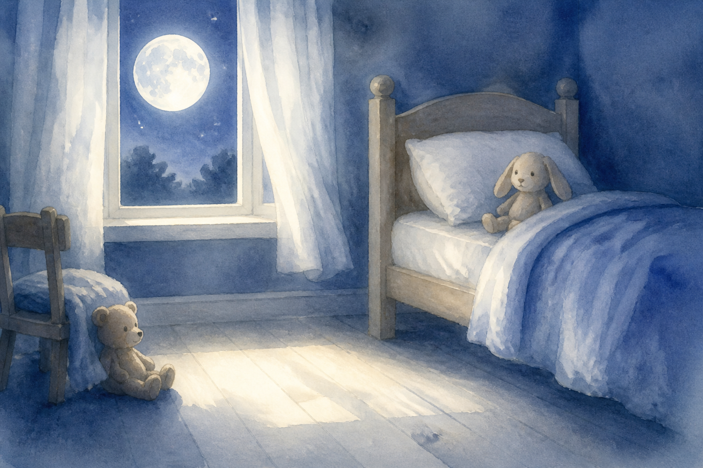
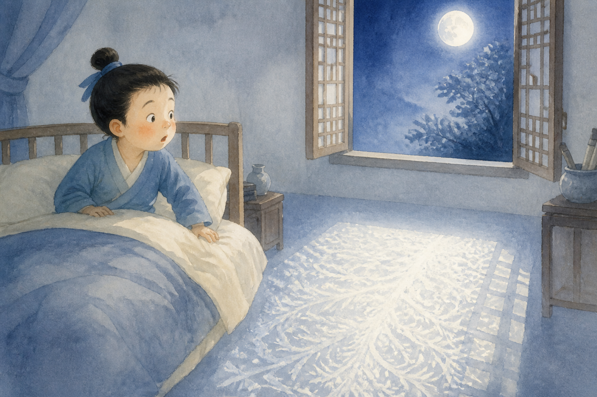
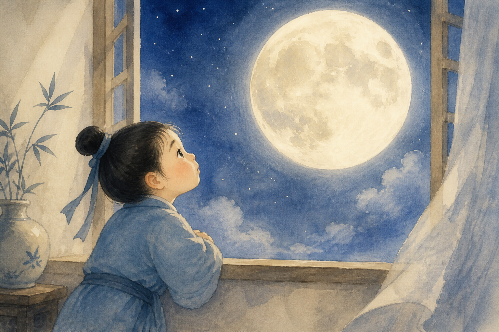
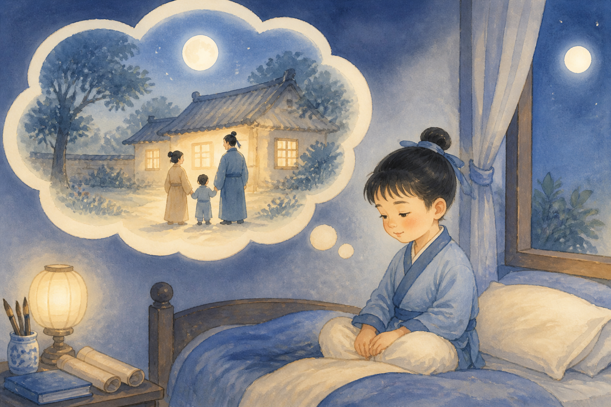

静夜思
床前明月光，
疑是地上霜。
举头望明月，
低头思故乡。
月光像霜、抬头看月、低头想家……还有中秋赏月的小拓展。听朗读时动画会自动暂停。
点下面听温柔朗读。听的时候故事动画会安静下来。
点开每一句，看看小画，再听懂意思。
床前一片亮亮的光。

安静的夜里，床前忽然亮起来，那是月亮送来的光。
好像地上铺了白霜。

月光太白了，乍一看还以为是地上的霜呢。
抬起头看月亮。

抬起头，望着天上那轮又圆又亮的月亮。
低下头，想起家乡。

低下头，心里想起长大的那个家，还有爱的人。
用熟悉的小画面，记住诗里的意思。
又亮又好看的月亮。
白白薄薄的一层，像冰。
抬起头来看。
自己长大的那个家。
很简单哦，点一点就好，没有分数和排名。
“疑是地上霜”里的霜像什么？
先点第一句，再点第二句。
小斜线表示轻轻停一下，不是诗里的字。
床前 / 明月光，疑是 / 地上霜。
举头 / 望明月，低头 / 思故乡。
不要求一次背会，先让孩子看见月亮、感到温暖。
晚上如果看见月亮，问问孩子：“月亮照到我们，也会照到谁呀？”把想家讲成心里有爱。
和孩子一起：先抬头看月亮（或月亮图片），再摸摸胸口说“我想家/我想你”，对应举头与低头。